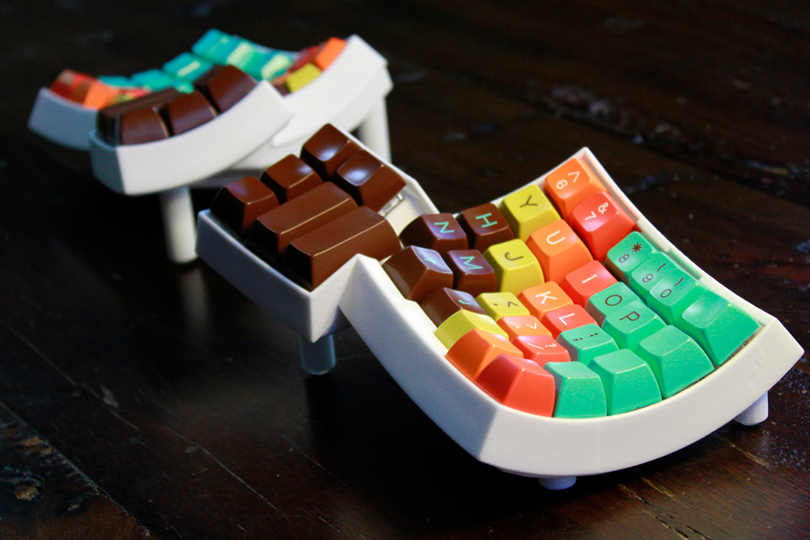
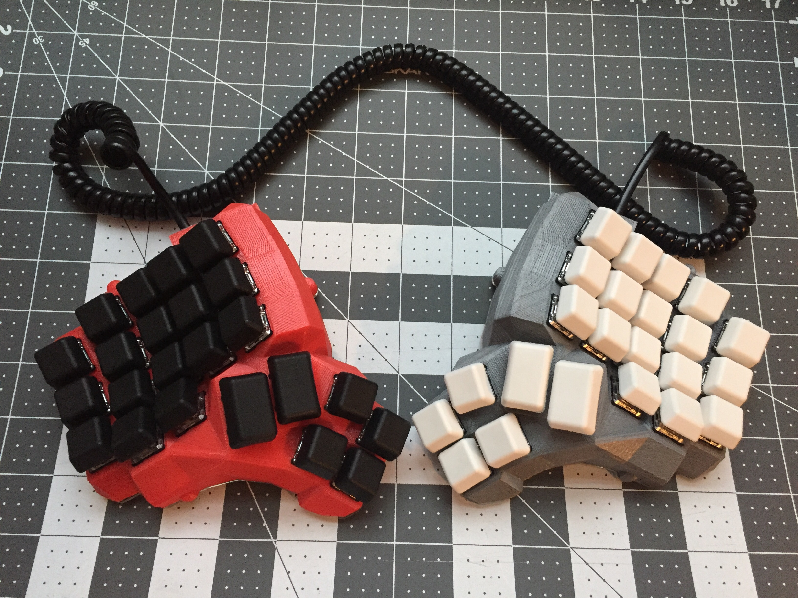
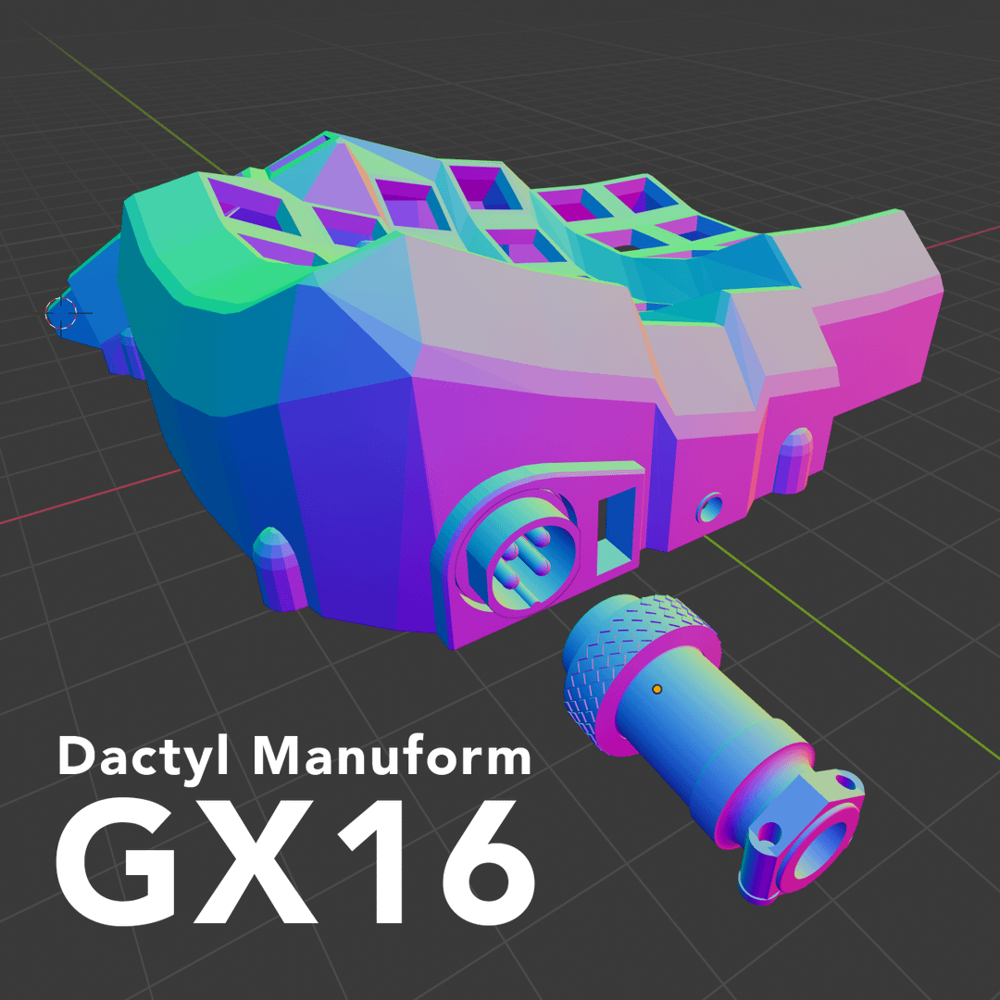
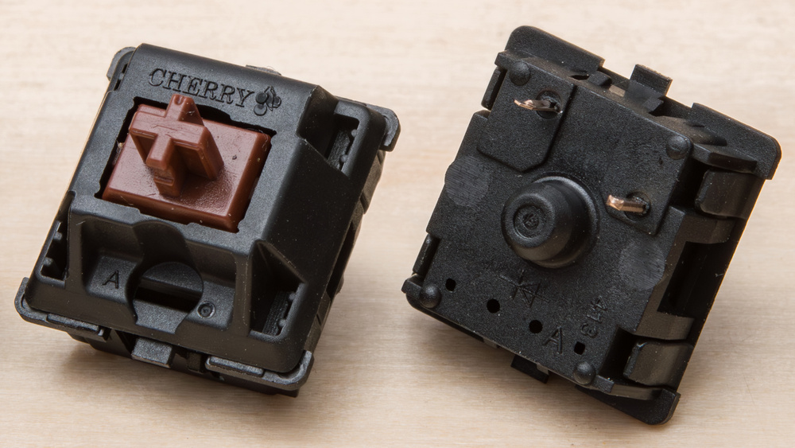
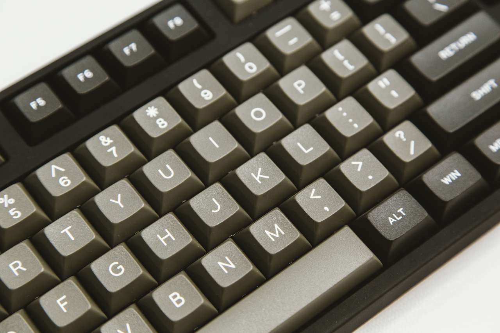
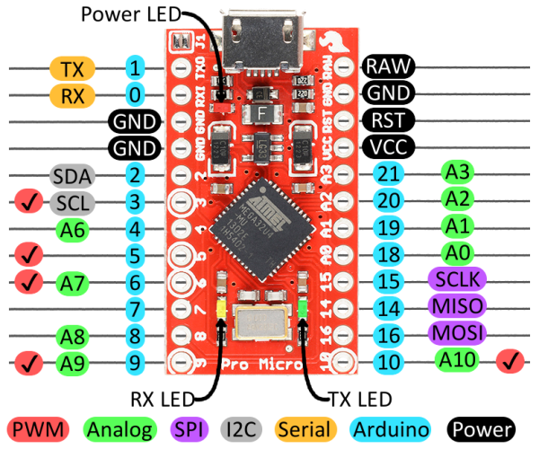
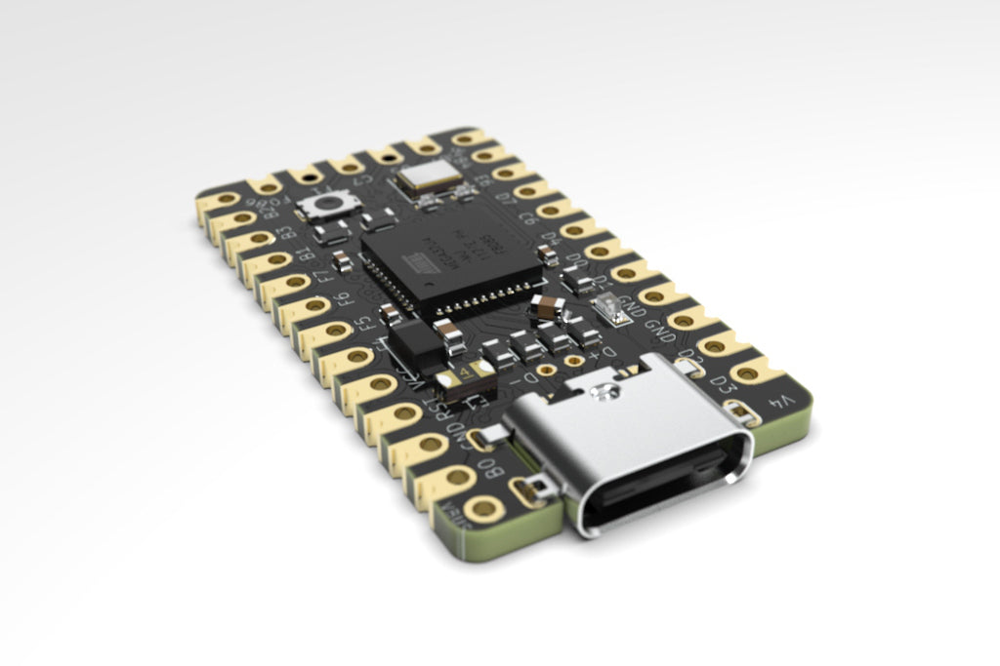
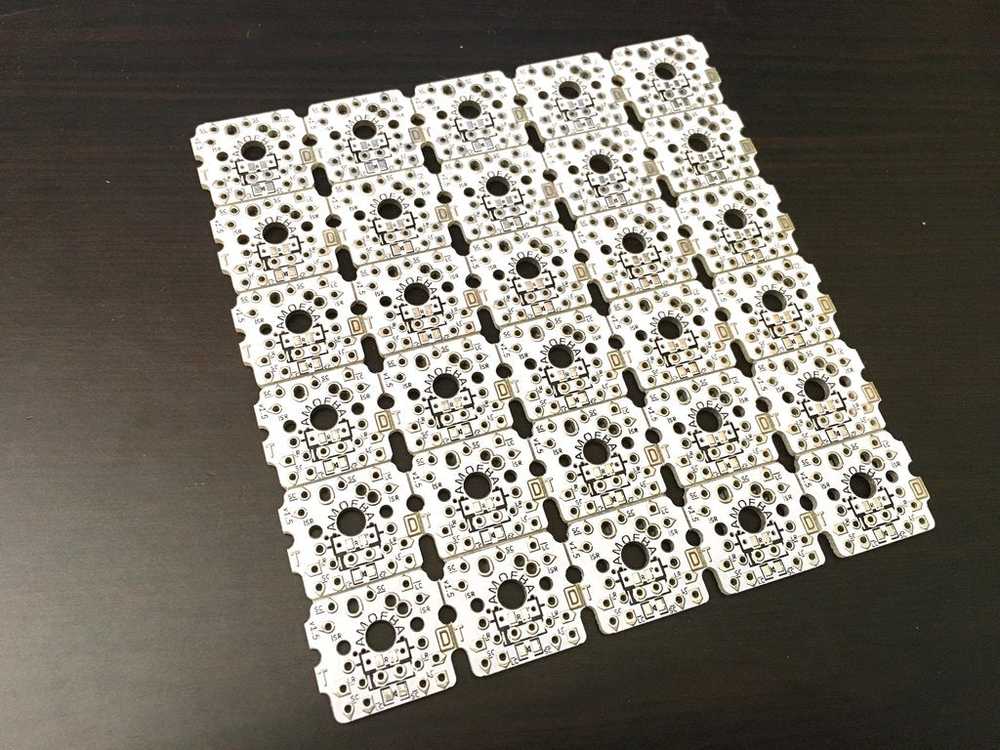

Dactyl Manuform II — Component Selection
So I decided to build a Dactyl myself. Even with that end goal decided—that known way out of this rabbit hole—there are an almost infinite number of detour rabbit holes to fall into.
What Kind of Dactyl?
I'm going to be a bit of a open-source historian here, so bear with me.
The original dactyl was designed several years ago by Matt Adereth because he suffered from RSI and didn't see anything on the market that satisfied his needs. You can see his original GitHub repo and an enlightening YouTube video for more information.

The original Dactyl
A very popular fork of his came out a little later called the Dactyl Manuform, which modified the thumb cluster to curve away from you—better matching the thumb's range of motion. It also extended the case chassis all the way down, giving more room for hand-wiring—much appreciated.

The Dactyl Manuform
To decide between these two main styles, I moved my thumb around in the air a bunch and sorta realized the Manuform would be more comfortable. It also seems anecdotally that most redditers also prefer the Manuform.
From there, I stared at the configuration options from ohkeycaps' Built-to-order Dactyls to
figure out what type of Dactyl Manuform I wanted—4x6, 4x5, 5x6, 6x6, etc. I decided that the 5x6 most
matched the number and placement of keys I most regularly used. The 6x6 had an extra row up top for F
keys, and the 4x6 was missing the number row.
Which case?
There are 45 forks of just the Dactyl Manuform, and 384 forks of the original Dactl at the time of this writing, which is insane! Open-source and the ready availability of 3d-printing has made the DIY community into a treasure.
I don't own a 3d printer, and I don't want to buy one just to print this case, so my main action was to find a website selling prints of these designs, or contact a reddit member (they're very active and friendly!) to pay for them to print one for me. I looked around and settled on a design by /u/hellmoneywarriors called the Dactyl Manuform GX16.

The Dactyl Manuform GX16 by /u/hellmoneywarriors
The main thing I like about this design is that it uses a GX16 aviator to connect the two halves of the keyboard.
Most of the other designs use either a RJ9—a phone cord jack, really really ugly—or a TRRS port—the 4 ringed headphone connector you used to plug into your iPhone before they removed it. The TRRS port is way more popular, mostly because it look sleek, it's relatively easily available, and some people make really slick TRRS cables that you can buy to bling out your keyboard. However, there's one critical flaw to TRRS cables. Because the rings are arranged stacked on top of eachother, when you insert or pull out the cable, you actually cross the connections. The tip of the cable will slide past 3 other connections before reaching its final destination. Thus you can short-circuit your keyboard microcontroller if you insert/eject the cable while the USB power is plugged in. This has happened to some people, and others claim it's not an issue—regardless I wasn't happy that I'd always have to be ultra careful about not accidentally disconnecting my keyboard halves while it's plugged in.
The aviator connector can only be inserted in one orientation, so you don't run the risk of short-circuit, and it also looks ultra sleek. Like so sleek that it's a thing for mechnical keyboard enthusiasts to splice an aviator connector into their USB cable—which serves no practical purpose—simply because it looks cool.
The main disadvantage to this cable, is that you can't really buy a two-sided three-foot aviator cable, they don't exist, you have to custom make it yourself. Whereas you can buy a 3 foot TRRS cable relatively easily. I figured that since I'm already soldering this keyboard together, it's not much further to soldier a custom cable for it as well. Plus, this lets me make my own custom sleeved cable without paying an extra arm and a leg.
So finally the case is decided upon.
Which switches
There are a dizzying array of switch types available now-a-days. When I first bought my mechanical keyboard, it was basically a choice between Cherry Browns, Cherry Blues, or maybe Cherry Blacks. Rather than go deeper into this particular rabbit hole, I decided to do the boring thing and stick with my Cherry MX Browns. I find Blues too noisy. I tried clears once and they hurt because the actuation force was too strong. So maybe one day I'll try Reds out, which have the same force as browns but use a linear profile rather than a tactile bump.

Cherry MX Brown
Keycaps
This could have been a really deep rabbit hole, because there's a whole sub community around keycaps. Luckily, the Dactyl Manuform has some limitations that narrow down the choices significantly.
- uniform profile — yes, keycaps have various profiles that govern the shape of the surface of the key that you touch with your finger. Because I'll be moving a bunch of keys around to the thumb cluster, it's really best to get a uniform profile, which mostly means either DSA or uniform R3 SA.
- keycap set — because all the dactyl manuform keys are single letter sized, I needed a set of keys with modifiers of single letter size. Sets that fulfill this criteria are often labelled as "ortholinear", "ergodox", or "ergonomic".
With these two requirements, I wasn't able to find any black keycaps. So I went with the dark grey DSA Dolch set from Signature Plastics. It was kind of expensive because I had to buy the 60% alpha kit, the icon modifier kit, and a one-off pipe key.

The DSA Dolch set
Microcontroller
The brain of your keyboard. The standard choice for Dactyl Manuforms is the Arduino Pro Micro. It was developed by sparkfun under an open hardware license which means there are many cheap clones of it. I almost just bought two of these, but started reading about its main complaint. The USB-micro connector is attached right onto the microcontroller itself, and it's not very solidly attached, so it's common for users to accidentally rip off the port, requiring a new controller.

Arduino Pro Micro
The Elite-C microcontroller was designed—by and for the keyboard enthusiast community—to address this flaw, replacing the flimsy micro-USB port with a much hardier USB-C connector. It also added additional I/O pins, an onboard physical reset button, a status LED, and a DFU bootloader by default.

Elite-C
This all sounds great, and at a price of just $18 each, this seemed a very sensible upgrade.
Amoeba PCBs
I didn't even discover these until halfway through my ordering of parts. An Amoeba is a tiny single-switch PCB that you mount under each switch. Instead of carefully running and shielding bare wires against each other to avoid shorts, the little board routes the connections for you—you just solder a diode and your row/column wires to its pads.

An Amoeba single-switch PCB
Honestly they're kind of unnecessary for a plain hand-wired build—you can just solder directly to the switch pins. But if you ever want to add per-key LEDs, they're basically a must, since they give you tidy pads to wire the LEDs into. I went with them anyway because I liked how clean and debuggable they'd make the wiring look.